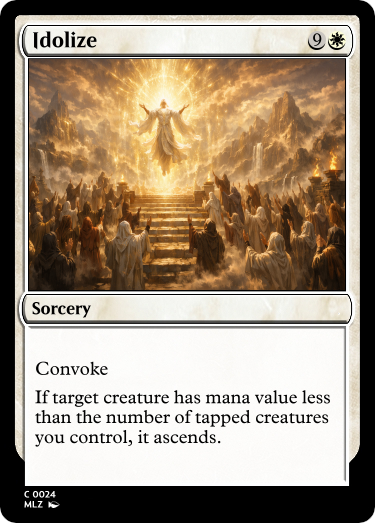
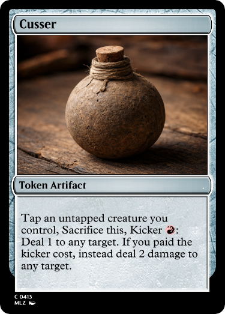
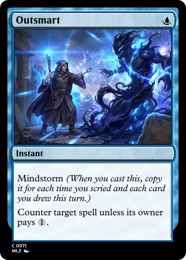

Malazan Cube of the Fallen
Card gallery · Repository · Rules
Ascend
Ascend: Custom mechanic (not the existing “ascend” / City’s Blessing). When a creature ascends, if it hasn’t already ascended, put a God subtype counter on it, then choose two different options from two of its colors. If the creature is monocolored, choose both options for that color:
- White: Indestructible or other creatures you control get +1/+1.
- Blue: Hexproof or other creatures you control have curiosity.
- Red: Double strike or other creatures you control get +2/+0.
- Green: +3/+3 or creatures you control have vigilance, trample, and reach.
- Black: Lifelink and deathtouch or other creatures you control have afterlife 2.

Cusser tokens
Cusser tokens: Artifact tokens that can be sacrificed (often with optional kicker costs) to deal damage to targets. Multiple cards create or care about Cussers.

Convenience keywords
Plunder: Create a Treasure token.

Cook: Create a Food token.

Bleed: Create a Blood token.

Slow: Activate this ability only when you could cast a sorcery.

Cunning: You may cast spells as though they had flash, and you may activate Slow abilities as though they didn’t have Slow. (e.g. “You gain Cunning until end of turn.”)

Impulse: Exile the top card of your library. You may play it until end of turn. Timing restrictions still apply.

Freeze: Tap target creature and put a stun counter on it.

Tutor: Tutor [for <x> type of card] to [y] zone: Search your library for a card [and reveal it if a type is specified], put it in the specified zone, then shuffle your library.

Curiosity: When this creature deals damage to a player, draw a card.

Storm variants
Landstorm: Copy this spell for each land you’ve played this turn.

Mindstorm: Copy this spell for each card you’ve drawn and each time you’ve scried this turn.

Elderstorm: Copy this spell for each Elder spell you’ve cast this turn.

Parameterized counters
Subtype counters: An “Elf” subtype counter gives the creature the subtype Elf.

Name counters: A “Max” name counter gives the creature the name “Max.” Creatures can have multiple names.